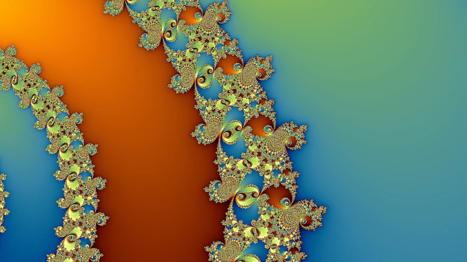
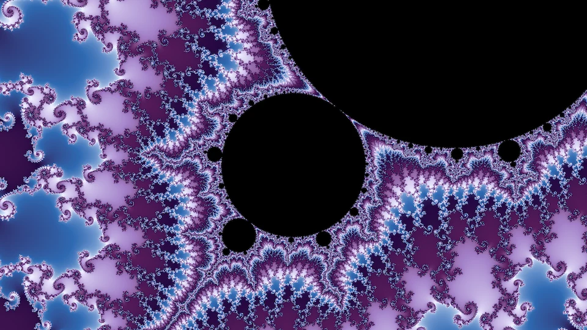
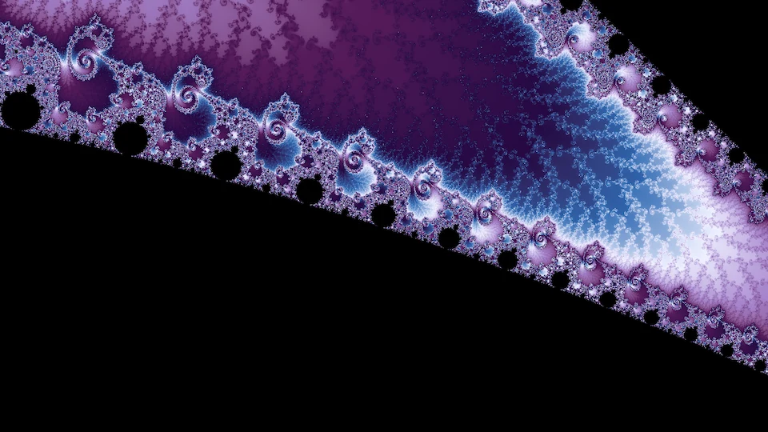
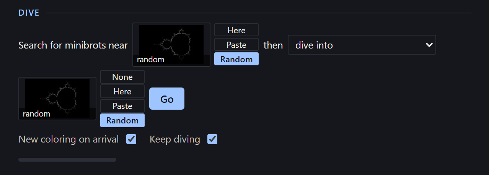

Every picture in this project's main galleries is computed in double-precision floating point, the 64-bit number format a processor does arithmetic in natively. This is fast and efficient, but it breaks down when you zoom deeply enough into the Mandelbrot set. Past a certain point, neighboring samples round to the same number and whole groups of pixels compute the same orbit. The result is blocky discretization artifacts that have nothing to do with the fractal, and they get worse the deeper you go.
It's possible, but expensive, to switch to higher-precision arithmetic: 128-bit floats, or arbitrary-precision libraries such as rug in Rust or mpmath in Python. Fortunately, the deep-zoom community has developed clever mathematics that looks much deeper into the Mandelbrot set far more efficiently. I go over it briefly at the end of this page. Deeper frames also need a slower, more deliberate way of browsing, which the Deep tab of the fractal explorer provides.
Here is a video of a deep descent, down to a frame about 3.5 × 10−15 wide.
It was made with
builder/zoom.py,
which computes a high-precision field once at each halving of the width and colors it
separately.
Video pendingA deep zoom into the Mandelbrot set, from the whole set down to a frame about 3.5 × 10⁻¹⁵ wide.
More videos are on the Deep zoom videos page.
Deep frames have wildly varying escape times, and getting a rendering that conveys their full range of detail often takes more exploration and parameter tweaking. The percentile stretch from rendering fundamentals spreads the palette linearly between each frame's own 0.5th and 99.5th percentiles. At extreme depths escape counts run into the tens of thousands, and the stretch leaves most of the picture inside a few percent of the palette. For deep frames an absolute scale generally works best: the smooth count passes through a logarithm or a power curve, and the palette then repeats at a fixed period. The figure below shows the video's final frame under several such colorings.
What depth adds to a picture
With some deliberate choices guiding the descent, deeper parts of the Mandelbrot set and related fractals produce much richer detail and patterns in regions that look plain and smooth at shallower depths. In the shallow parts of the Mandelbrot set, the smooth rendering approach often leaves large areas with only a smooth gradient. For most of the gallery I used alternative rendering modes (especially tia and stripe) to add detail to these regions, but it's also possible to find extremely deep areas of these fractals that contain beautiful fractal richness where the shallower levels would be smooth. The figure below compares a shallow frame with a deep frame inside it.

Shallowwidth 10⁻¹²
Minibrot descents
Small copies of the set, minibrots, lie all along the boundary: every filament passes infinitely many of them, at every depth, smaller and more numerous the further down you go. From outside, a copy looks like a small black body with the familiar bulbs and hairs. If you zoom into the copy's neighborhood, you see more than that. The copy's own seahorse valleys and spirals are laid over the structure you were already in, so a region that looked smooth from further out fills with filigree. Close to a copy, that filigree often arranges into what look like whole Julia sets, the embedded Julia sets that deep-zoom artists steer toward. The figure below follows one descent of this kind, six steps down a chain of components nested one inside the next. Each step frames the next component in the chain, and the last frame is about a billionth of the complex plane wide.

Period 54width 2 × 10⁻⁶

Period 972width 5 × 10⁻⁸
Descents like the one in the video can be composed by hand or automated. The neighborhood of a minibrot is a small, turned copy of the whole set, so every place in the set has a twin inside every minibrot, smaller and slightly distorted. That means any frame can be carried into any minibrot: find the minibrot, then find the frame's twin inside it. Simply scaling and turning the frame by the minibrot's size and angle misses the twin badly at any real depth, often by thousands of frame widths, so I solve for the twin directly instead. The Dive block at the top of the fractal explorer's Deep tab does all of this in one press. You choose where to search for minibrots (the current view, a view you paste in, or a random wallpaper) and what to do with the ones it finds: land on one, stop at its symmetry point, carry a second view inside it, or collect the largest of them. Pressing it again from where it lands keeps descending, and since the periods multiply at every step, the nesting can keep going until the iteration cap runs out. Keep diving repeats the dive with fresh random draws until you stop it, and every result collects in a Dive results list that you can browse and save from.

Nesting one minibrot inside another lets you choose what kind of detail you get. Take two frames, A and B, each centered on a minibrot. Framing A inside A's copy, B inside A's, A inside B's, or B inside B's gives four different pictures from the same two places.
How a deep frame is computed
The Deep tab in the fractal explorer computes one orbit at high precision, the reference orbit, for the center of the frame, using fixed-point arithmetic with as many bits as the frame's width requires. Every pixel then iterates only its small offset from that orbit. Write a pixel's orbit as zn = Zn + δn, where Zn is the reference orbit, and let Δc be how far the pixel's c is from the center's c. For z ↦ z2 + c the offset then obeys
and the higher degrees follow from the binomial expansion in the same way. The offsets are tiny, but a double keeps its relative precision at any magnitude, so δ fits comfortably in an ordinary double even where the coordinates themselves do not. This is perturbation, and it is how every modern deep-zoom renderer works.
The reference orbit is only a good anchor while a pixel's orbit stays near it. When the full value Zn + δn passes closer to zero than δn itself, the offset has become the larger quantity and precision starts to drain away. To fix this I use rebasing, which comes from Zhuoran on fractalforums.org. At that step the pixel takes its whole current value as a new offset and restarts from the beginning of the same reference orbit. With rebasing, one reference orbit serves the entire frame. The fractal explorer draws the multibrot families up to degree six, on both the parameter and dynamical planes, using the smooth rendering mode. Its iteration cap follows the same depth rule as the rest of the engine, up to a ceiling of a million, or two million when you set the count yourself, and a probe raises it when too many samples reach it. In practice it works down to widths of about 10−30 close to a minibrot, where the ceiling on iterations runs out. Renderers that also extend the exponent range of their offsets go hundreds of decades deeper.
Rendering speed
The fractal explorer renders deep frames on the CPU, in WebAssembly, across the browser's worker threads. On one six-core desktop, the video's final frame takes about 15 seconds at 1280 by 720 with one sample per pixel, averaging about fifteen thousand iterations a sample. On the same machine, Fraktaler 3, a mature open-source deep-zoom renderer, takes about 50 seconds on the CPU with its acceleration on and about 100 without it. Compared like for like (CPU, doubles, plain perturbation), the fractal explorer does about seven times as many iterations per second. I think the reason is specialization rather than a better algorithm: Fraktaler 3 interprets general formulas and tracks derivatives at every step, while my kernel runs one fixed update. The two agree on more than 99.7% of pixels.
GPUs are clearly faster at this kind of independent per-pixel work. On the same machine Fraktaler 3's GPU path draws the frame in under 3 seconds, in single precision. Consumer GPUs are slow at doubles, and in double precision the same GPU roughly ties the fractal explorer's CPU kernel, which is why the fast GPU renderers work in single precision with extended-exponent tricks. I kept rendering on the CPU for portability, and only used the GPU to evaluate the neural networks.
Deep-zoom renderers usually add bilinear approximation, which skips many iterations at once by applying a precomputed linear map. I built it into the fractal explorer and then took it back out, because on the frames worth looking at it wasn't much faster, and it changed the picture. On frames with visible structure it ranged from about 20% slower than plain perturbation to about 2.6 times faster. At every tolerance tried it also moved escape counts, and on some frames it moved the boundary of the interior, so the pictures stopped matching what the engine draws. It paid off handsomely only on frames that were almost entirely interior. Fraktaler 3 shows the same pattern on the video's final frame: its approximation buys a factor of about 1.3 to 2 and moves a fifth of the pixels by more than one iteration.
The multibrots
The deep rendering techniques on this page work on the multibrots and their Julia sets too, though each iteration costs more as the degree rises. Their deep areas are full of rich detail, and learning to navigate them well is a key part of making fractal artwork.
Random dives
I designed the walks, their parameters, and the judges entirely for the double-precision range, where rendering is fast enough to search at scale. But understanding the shallow regions well turns out to also be valuable for generating deep fractal artwork because it helps you descend into the beautiful parts of each multibrot. A random dive starts from one of those places and carries it down a chain of minibrots, so running dives continuously is a straightforward way to approximate the whole process at depth. The results are impressive even with no filtering beyond dropping blank frames, and no judge looking at the deep frames. The figure below shows some I picked by eye; the Deep tab's Random dives list holds a thousand more, unpicked, alongside a hand-picked gallery.


I had hoped the location, wallpaper, and gallery judges, trained only on shallow pictures, would carry over to depth and could rank these dives. So I scored 817 dive candidates with each of them and compared their rankings with the 15 best frames I picked by eye, shown in the figure above. The location judge, which sees only the shape of a place, makes a reasonable coarse ranking: twelve of my fifteen land in its top fifth. The wallpaper and gallery judges do barely better than ranking frames by how little of them is interior, and recoloring the same frames reshuffles their rankings almost entirely.
The top 15 of the 817 according to each judge


Every figure on this page links to its frame in the explorer, the deep ones in the Deep tab, and the tab's links carry the frame and its coloring.